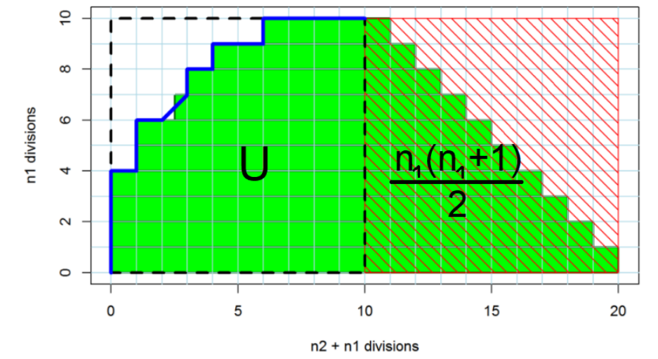

Background
AUC와 Mann-Whitney statistic 관계
두 그룹의 분포가 같은 지 다른 지 검정하기 위한 방법 중 Mann-Whitney U test라는 비모수검정법이 있다. 비모수적검정법이기에 population의 분포에 대한 가정을 하지 않는다. 첫 번째 그룹에서 i.i.d로 뽑은 표본 데이터가 \(X_1, X_2, …, X_n\)이고, 두 번째 그룹에서 i.i.d로 뽑은 표본 데이터가 \(Y_1, Y_2, …, Y_m\)이라고 하자. Mann-Whitney U test에서 Null hypothesis, Alternative hypothesis는 다음과 같다.
Null hypothesis
\(H_0\): 두 그룹의 분포가 동일하다.
Alternative hypothesis 대립가설은 다음 중 한 가지이다.
\(H_1\): 두 그룹의 분포가 다르다.
\(H_1\): 첫 번째 그룹의 분포가 두 번째 그룹의 분포보도 오른쪽에 있다.
\(H_1\): 첫 번째 그룹의 분포가 두 번째 그룹의 분포보도 왼쪽에 있다.
Mann-Whitney statistic은 다음과 같다.
\[ U = \sum_{i=1}^{n_1} \sum_{j=1}^{n_2} S(X_i, Y_j) = R_1 - \frac{n_1 (n_1 + 1)}{2} \]
\[ \text{단, } S(X, Y) = \begin{cases} 1 & \text{if } X > Y \\ \frac{1}{2} & \text{if } X = Y \\ 0 & \text{if } X < Y \end{cases} \]
\(R_1\)은 첫 번째 그룹의 순위합을 나타낸다.
이 때 U를 n1, n2로 나누어 정규화를 하면 그 값은 X > Y일 확률을 추정하는 통계량이 되며 이는 AUC의 값과 동일하다.
\[AUC = \frac{U}{n_1 n_2} = P(X > Y) + \frac{1}{2} P(X = Y) \]
시각적으로 왜 AUC와 정규화한 U statistic이 같은 지를 시각적으로 보여주는 그림이다. positive case와 negative case를 rank순으로 배치한 뒤, positive case만 모아 다시 그림을 그린다.

왼쪽 직사각형에 속하는 부분의 넓이가 U statistic이 되며 이를 n1과 n2로 나누어주면 AUC가 됨을 확인할 수 있다.

Motivation
새로운 영상 의학의 판독법의 효과를 종래의 판독법과 성능을 비교해야 하는 상황을 생각해보자. 영상 의학 검사는 reader마다 양성임을 판단하는 threshold가 다르기 때문에, sensitivity와 specificity의 variability가 다를 수 밖에 없다. 그렇기에 그런 효과를 보정하기 위하여 Multi-Reader Multi-Case analysis가 도입되었다. Each case는 multiple readers에 review되며, each reader는 multiple cases를 review한다. 통계적으로는 모형에서 case와 reader의 효과를 random factor로 처리하고, 그에 따라 각각의 variability를 설명할 수 있다.
different modality의 성능평가 뿐만 아니라, machine learning algorithm result도 비교할 수 있다.
Multi-Reader Multi-Case analysis
Single Reader의 경우 다음과 같이 AUC의 estimator를 구한다.
\[\hat{AUC}_r = \frac{1}{N_0 N_1} \sum_{k=1}^{N_1} \sum_{k'=1}^{N_0} S(X_{rk} - Y_{rk'})\] \(X_{rk}\)는 Signal-Present Scores, \(Y_{rk'}\)는 Signal-Absent Scores를 의미한다.
\[ 단, s(x) = \begin{cases} 1.0, & x > 0 \quad \text{Correct ranking} \\ 0.5, & x = 0 \\ 0.0, & x < 0 \quad \text{Incorrect ranking} \end{cases} \]
[^note1]### 따라서 Average Over Readers는 다음과 같이 구할 수 있다.
\[ \hat{AUC}_\cdot = \frac{1}{N_R N_0 N_1} \sum_{r=1}^{N_R} \sum_{k=1}^{N_1} \sum_{k'=1}^{N_0} S(X_{rk} - Y_{rk'}) \]
간단한 예시를 하나 살펴보자.
Truth는 질병이 있는 지 없는 지 정답을 의미한다.
이때 Blue Reader와 Red Reader는 양성일 score를 modality A와 modality B로 각 case마다 판독을 하여 점수를 매긴다.


modality A와 modality B에 대해 각각의 mean AUC estimator를 구할 수 있다.
각 modality의 Reader-averaged AUC의 차이는 0.88 - 0.72 = 0.16 이 된다.
Variance of difference of reader-averaged AUC를 계산한다면 이 둘의 차이 여부에 대해 말할 수 있을 것이다.
Single Modality일 때, AUC estimator의 variance는 다음과 같이 7 terms로 나눌 수 있다.
\[ \text{var}(\hat{AUC}) = \frac{\sigma_0^2}{N_0} +\frac{\sigma_1^2}{N_1} +\frac{\sigma_{01}^2}{N_0 N_1} +\frac{\sigma_R^2}{N_R} +\frac{\sigma_{0R}^2}{N_0 N_R} +\frac{\sigma_{1R}^2}{N_1 N_R} +\frac{\sigma_{01R}^2}{N_0 N_1 N_R} \]
Each term이 의미하는 내용은 다음과 같다.
\(\frac{\sigma_0^2}{N_0}\): Normal Cases내 variability
\(\frac{\sigma_1^2}{N_1}\): Diseased Cases내 variability
\(\frac{\sigma_{01}^2}{N_0 N_1}\): Normal/Diseased cases사이 interaction에 의한 variability
\(\frac{\sigma_R^2}{N_R}\): Reader variabilty
\(\frac{\sigma_{0R}^2}{N_0 N_R}\): Normal case/Reader interaction에 의한 variability
\(\frac{\sigma_{1R}^2}{N_1 N_R}\): Diseased case/Reader interaction에 의한 variability
\(\frac{\sigma_{01R}^2}{N_0 N_1 N_R}\): Normal Case/Diseased Case/ Reader간 3중 interaction에 의한 variability
각 σ에 대한 정확한 계산식은 Clarkson et al. (2006)1을 참고하기 바란다.
Multi-Reader Multi-Case Simulation
연구비 절약, 윤리적 문제, case가 희귀한 경우, 새로운 의료 기기가 시장 출시되기 전 성능검증 등을 하기 위해 MRMC simulation할 수 있다. Roe and Metz model을 통해 data를 simulation 한다. 모형은 다음과 같다.
Roe and Metz model
\[X_{ijk}^{R\&M} = \mu_t + \tau_{it} + R_{jt} + C_{kt} + [RC]_{jkt} + [\tau R]_{ijt} + [\tau C]_{ikt} + [\tau RC]_{ijkt} + E_{ijkt}\]
이때, \(X_{ijk}\)에서 i는 modality, j는 reader, case는 k, t는 truth state를 의미한다. modality와 truth state는 fixed factor이고, reader와 case는 random factor이다. 이외 나머지 term들은 고유한 variance를 가진independent zero-mean Gaussian random variables이다.
iMRMC package
iMRMC는 MRMC analysis/simulation을 하기 위한 package로 다음의 주요한 2개의 function을 포함하고 있다.
doIMRMC: ROC data를 받아서 MRMC analysis를 수행하는 function
sim.gRoeMetz: MRMC data를 simulation하여 two modalities를 비교할 수 있는 function
cardiac CT study 예시 자료를 통해 MRMC를 수행해보자. colorScaleStudyData dataset은 다음 링크에서 다운로드 받을 수 있다.
이 study는 Grayscale, Rainbow and Hotiron등 세 가지의 modalities를 포함한다. 경험이 적은 판독자를 Low, 경험이 많은 판독자를 High로 표시하였으며, Low는 1~8까지 High는 1~4까지 총 12명의 판독자가 포함되어 있다. 총 210 cases를 포함하며, 그중 양성은 105개이다. 실습에 필요한 data는 cardioCTReaderData(판독자의 판독 결과)와 cardioCTGroundTruth data(정답)이다. 그리고 이 study는fully crossed가 아닌 split-plot study이다.
cardioCTGroundTruth와 cardioCTReaderData는 다음과 같다.
names(cardioCTReaderData)[4] <- "score"
kable(cardioCTGroundTruth[1:30,], caption = "cardioCTGroundTruth", align = 'c' )| caseID | truth |
|---|---|
| 1 | positive |
| 2 | positive |
| 3 | positive |
| 4 | positive |
| 5 | positive |
| 6 | positive |
| 7 | positive |
| 8 | positive |
| 9 | positive |
| 10 | positive |
| 11 | positive |
| 12 | positive |
| 13 | positive |
| 14 | positive |
| 15 | positive |
| 16 | positive |
| 17 | positive |
| 18 | positive |
| 19 | positive |
| 20 | positive |
| 21 | positive |
| 22 | positive |
| 23 | positive |
| 24 | positive |
| 25 | positive |
| 26 | positive |
| 27 | positive |
| 28 | positive |
| 29 | positive |
| 30 | positive |
kable(cardioCTReaderData[1:30,], caption = "cardioCTReaderData", align = 'c' )| readerID | caseID | modalityID | score |
|---|---|---|---|
| Low1 | 141 | Grayscale | 31 |
| Low1 | 142 | Grayscale | 54 |
| Low1 | 143 | Grayscale | 88 |
| Low1 | 144 | Grayscale | 88 |
| Low1 | 145 | Grayscale | 54 |
| Low1 | 146 | Grayscale | 32 |
| Low1 | 147 | Grayscale | 55 |
| Low1 | 148 | Grayscale | 33 |
| Low1 | 149 | Grayscale | 66 |
| Low1 | 150 | Grayscale | 99 |
| Low1 | 151 | Grayscale | 75 |
| Low1 | 152 | Grayscale | 54 |
| Low1 | 153 | Grayscale | 21 |
| Low1 | 154 | Grayscale | 66 |
| Low1 | 155 | Grayscale | 88 |
| Low1 | 156 | Grayscale | 22 |
| Low1 | 157 | Grayscale | 42 |
| Low1 | 158 | Grayscale | 76 |
| Low1 | 159 | Grayscale | 32 |
| Low1 | 160 | Grayscale | 75 |
| Low1 | 161 | Grayscale | 65 |
| Low1 | 162 | Grayscale | 65 |
| Low1 | 163 | Grayscale | 55 |
| Low1 | 164 | Grayscale | 32 |
| Low1 | 165 | Grayscale | 52 |
| Low1 | 166 | Grayscale | 77 |
| Low1 | 167 | Grayscale | 20 |
| Low1 | 168 | Grayscale | 87 |
| Low1 | 169 | Grayscale | 65 |
| Low1 | 170 | Grayscale | 42 |
cardioCTGroundTruth에 readerID와 modalityID columns를 추가하고 truth를 positive = 1, negative = 0이 되게끔 변형해준다.
cardioCTGroundTruth$readerID <- factor("truth")
cardioCTGroundTruth$modalityID <- factor("truth")
cardioCTGroundTruth$truth <- as.numeric(cardioCTGroundTruth$truth) -1 #truth는 factor형 pos: 2 neg: 1
names(cardioCTGroundTruth)[names(cardioCTGroundTruth) == "truth"] <- "score"
kable(cardioCTGroundTruth[1:30,], caption = "cardioCTGroundTruth", align = 'c' )| caseID | score | readerID | modalityID |
|---|---|---|---|
| 1 | 1 | truth | truth |
| 2 | 1 | truth | truth |
| 3 | 1 | truth | truth |
| 4 | 1 | truth | truth |
| 5 | 1 | truth | truth |
| 6 | 1 | truth | truth |
| 7 | 1 | truth | truth |
| 8 | 1 | truth | truth |
| 9 | 1 | truth | truth |
| 10 | 1 | truth | truth |
| 11 | 1 | truth | truth |
| 12 | 1 | truth | truth |
| 13 | 1 | truth | truth |
| 14 | 1 | truth | truth |
| 15 | 1 | truth | truth |
| 16 | 1 | truth | truth |
| 17 | 1 | truth | truth |
| 18 | 1 | truth | truth |
| 19 | 1 | truth | truth |
| 20 | 1 | truth | truth |
| 21 | 1 | truth | truth |
| 22 | 1 | truth | truth |
| 23 | 1 | truth | truth |
| 24 | 1 | truth | truth |
| 25 | 1 | truth | truth |
| 26 | 1 | truth | truth |
| 27 | 1 | truth | truth |
| 28 | 1 | truth | truth |
| 29 | 1 | truth | truth |
| 30 | 1 | truth | truth |
이제 cardioCTReaderData와 cardioCTGroundTruth dataset 두 개를 합쳐준다.
comb_data <- merge.data.frame(cardioCTGroundTruth, cardioCTReaderData, by = names(cardioCTReaderData), all = TRUE, sort = FALSE)
kable(comb_data[1:30,], caption = "combined dataset", align = 'c' )| readerID | caseID | modalityID | score |
|---|---|---|---|
| truth | 1 | truth | 1 |
| truth | 2 | truth | 1 |
| truth | 3 | truth | 1 |
| truth | 4 | truth | 1 |
| truth | 5 | truth | 1 |
| truth | 6 | truth | 1 |
| truth | 7 | truth | 1 |
| truth | 8 | truth | 1 |
| truth | 9 | truth | 1 |
| truth | 10 | truth | 1 |
| truth | 11 | truth | 1 |
| truth | 12 | truth | 1 |
| truth | 13 | truth | 1 |
| truth | 14 | truth | 1 |
| truth | 15 | truth | 1 |
| truth | 16 | truth | 1 |
| truth | 17 | truth | 1 |
| truth | 18 | truth | 1 |
| truth | 19 | truth | 1 |
| truth | 20 | truth | 1 |
| truth | 21 | truth | 1 |
| truth | 22 | truth | 1 |
| truth | 23 | truth | 1 |
| truth | 24 | truth | 1 |
| truth | 25 | truth | 1 |
| truth | 26 | truth | 1 |
| truth | 27 | truth | 1 |
| truth | 28 | truth | 1 |
| truth | 29 | truth | 1 |
| truth | 30 | truth | 1 |
이제 iMRMC 패키지를 불러오고 doIMRMC함수를 이용하여 MRMC analysis를 수행한다. iMRMC에선 Ustat은 non-parametric estimation에 의한 result를 나타내며, MLEstat은 각각 parameter의 maximum likelihood estimation을 나타낸다.
Warning: package 'iMRMC' was built under R version 4.4.2result <- doIMRMC(data = comb_data)
AUCDf <- data.frame(rbind(result$MLEstat$AUCA[1:3],result$MLEstat$varAUCA[1:3], sqrt(result$MLEstat$varAUCA[1:3])),
row.names = c("AUC", "variance of AUC", "SE of AUC"))
names(AUCDf) <- result$MLEstat$modalityA[1:3]
kable(AUCDf, caption = "AUC for different modalities : MLEstat", align = 'c' )| Grayscale | Hot | Rainbow | |
|---|---|---|---|
| AUC | 0.5902954 | 0.5671724 | 0.5176793 |
| variance of AUC | 0.0015535 | 0.0008297 | 0.0009073 |
| SE of AUC | 0.0394148 | 0.0288037 | 0.0301211 |
AUCDf <- data.frame(rbind(result$Ustat$AUCA[1:3],result$Ustat$varAUCA[1:3], sqrt(result$Ustat$varAUCA[1:3])),
row.names = c("AUC", "variance of AUC", "SE of AUC"))Warning in sqrt(result$Ustat$varAUCA[1:3]): NaNs producednames(AUCDf) <- result$Ustat$modalityA[1:3]
kable(AUCDf, caption = "AUC for different modalities : Ustat", align = 'c' )| Grayscale | Hot | Rainbow | |
|---|---|---|---|
| AUC | 0.5902954 | 0.5671724 | 0.5176793 |
| variance of AUC | 0.0010402 | -0.0000249 | 0.0000338 |
| SE of AUC | 0.0322528 | NaN | 0.0058162 |
different modalities에 대해 AUC의 difference도 Ustat, MLEstat 두 가지 방법으로 estimation할 수 있다.
AUCDf <- data.frame(rbind(result$MLEstat$AUCAminusAUCB[4:6],result$MLEstat$varAUCAminusAUCB[4:6], sqrt(result$MLEstat$varAUCAminusAUCB[4:6]),
result$MLEstat$AUCAminusAUCB[4:6] - 1.96 * sqrt(result$MLEstat$varAUCAminusAUCB[4:6]), result$MLEstat$AUCAminusAUCB[4:6] + 1.96 * sqrt(result$MLEstat$varAUCAminusAUCB[4:6])), row.names = c("difference of AUC", "variance of difference of AUC", "SE of different of AUC", "95% CI lower bound", "95% CI upper bound"))
names(AUCDf) <- paste(result$MLEstat$modalityA[4:6], result$MLEstat$modalityB[4:6], sep = " vs. ")
kable(AUCDf, caption = "Difference of AUC among different modalities : MLEstat", align = 'c' )| Grayscale vs. Hot | Grayscale vs. Rainbow | Hot vs. Rainbow | |
|---|---|---|---|
| difference of AUC | 0.0231230 | 0.0726161 | 0.0494932 |
| variance of difference of AUC | 0.0021459 | 0.0024036 | 0.0019731 |
| SE of different of AUC | 0.0463239 | 0.0490261 | 0.0444191 |
| 95% CI lower bound | -0.0676719 | -0.0234750 | -0.0375683 |
| 95% CI upper bound | 0.1139178 | 0.1687072 | 0.1365547 |
AUCDf <- data.frame(rbind(result$Ustat$AUCAminusAUCB[4:6],result$Ustat$varAUCAminusAUCB[4:6], sqrt(result$Ustat$varAUCAminusAUCB[4:6]),
result$Ustat$AUCAminusAUCB[4:6] - 1.96 * sqrt(result$Ustat$varAUCAminusAUCB[4:6]),
result$Ustat$AUCAminusAUCB[4:6] + 1.96 * sqrt(result$Ustat$varAUCAminusAUCB[4:6])),
row.names = c("difference of AUC", "variance of difference of AUC", "SE of different of AUC", "95% CI lower bound", "95% CI upper bound"))
names(AUCDf) <- paste(result$Ustat$modalityA[4:6], result$Ustat$modalityB[4:6], sep = " vs. ")
kable(AUCDf, caption = "Difference of AUC among different modalities : Ustat", align = 'c' )| Grayscale vs. Hot | Grayscale vs. Rainbow | Hot vs. Rainbow | |
|---|---|---|---|
| difference of AUC | 0.0231230 | 0.0726161 | 0.0494932 |
| variance of difference of AUC | 0.0012101 | 0.0014347 | 0.0010837 |
| SE of different of AUC | 0.0347870 | 0.0378770 | 0.0329203 |
| 95% CI lower bound | -0.0450596 | -0.0016227 | -0.0150307 |
| 95% CI upper bound | 0.0913055 | 0.1468550 | 0.1140170 |
이제 Roe and Metz model을 사용하여, MRMC analysis simulation을 위한 dataset을 만들어보자. 이때 sim.gRoeMetz.config, sim.gRoemetz 두 함수를 이용하여, simulated dataset을 만들 수 있다.
sim.gRoeMetz.config 함수의 arguments는 다음과 같으며, 이를 통해 Roe and Metz model의 fixed/random effect를 조절할 수 있다.
sim.gRoeMetz.config의 argument를 통해 Roe and Metz model을 조절할 수 있다. sim.gRoemetz(config)함수는 sim.gRoeMetz.config를 통해 생성된 configuration object를 이용하여, simulated data를 생성한다.
config에 저장된 simulation parameter는 에 대한 자세한 설명은 iMRMC package확인할 수 있다.
이제, 이 두 함수를 이용하여 MRMC simulation을 수행한다.
library(ggplot2)
config <- sim.gRoeMetz.config() # Create a sample configuration file
df.MRMC <- sim.gRoeMetz(config) # Simulate an MRMC data set이 두 함수를 통해 simulated dataset을 visualization 시켜보았다.
ggplot(subset(df.MRMC, modalityID %in% c("testA", "testB")),
aes(x = score,
color = factor(unlist(lapply(as.character(caseID),
function(x) {strsplit(x, 'Case')[[1]][1]}))))) +
geom_density(position = "identity", alpha = 0.2) +
facet_grid(rows = "modalityID") +
labs(x = "MRMC Reading Score", y = "Density") +
theme(legend.title = element_blank())
MRMC analysis를 수행해본 결과는 다음과 같다.
result <- doIMRMC(df.MRMC)
AUCDf <- rbind(result$MLEstat$AUCA[1:2],
result$MLEstat$varAUCA[1:2],
sqrt(result$MLEstat$varAUCA[1:2])) %>% as.data.frame()
rownames(AUCDf) <- c("AUC", "variance of AUC", "SE of AUC")
names(AUCDf) <- paste("test", c("A","B"))
AUCDf$`test A vs test B` <- c(result$MLEstat$AUCAminusAUCB[3], result$MLEstat$varAUCAminusAUCB[3], sqrt(result$MLEstat$varAUCAminusAUCB[3]))
kable(AUCDf, caption = "MRMC analysis result with simulated data : MLEstat", align = 'c')| test A | test B | test A vs test B | |
|---|---|---|---|
| AUC | 0.8411250 | 0.8797500 | -0.0386250 |
| variance of AUC | 0.0016160 | 0.0011408 | 0.0024655 |
| SE of AUC | 0.0401991 | 0.0337760 | 0.0496538 |
Reference
- 박서영, & 김화영. (2023). 바이오통계학. 한국방송통신대학교출판문화원.
- Bischl et al. Chapter 04.13: AUC & Mann-Whitney-U Test Introduction to Machine Learning
- Wen et al. R Data Packages of Multi-Reader Multi-Case Studies and Simulation Tools to Support the Development of Reader Performance Evaluation Methods Wen
- Clarkson et al. (2006). A Probabilistic Model for the MRMC Method. Part 1. Theoretical Development. Acad Radiol.
- colorScaleStudyData
Footnotes
Clarkson et al. (2006). A Probabilistic Model for the MRMC Method. Part 1. Theoretical Development. Acad Radiol.↩︎
Reuse
Citation
@online{lee2024,
author = {Lee, Donghyung},
title = {Multi-Reader {Multi-Case} {Analysis}},
date = {2024-12-27},
url = {https://blog.zarathu.com/posts/2024-12-27-Multi-Reader Multi-Case Analysis},
langid = {en}
}